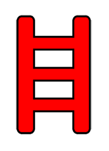
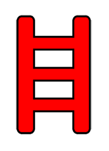

Diferentes lunas que podemos visitar.
Las lunas, también conocidas como mundos, son las diferentes zonas que podemos visitar para recolectar chatarra, estas también se dividen en un grado de dificultad, teniendo las lunas fáciles, las medias y las difíciles. Esta dificultad no solo influye al hecho de que sea más difícil sobrevivir, sino que también aumenta la cantidad de objetos de valor que pueden aparecer en las instalaciones, por lo que ir a las lunas difíciles será una decisión arriesgada, pero podrás salir más beneficiado que yendo a las lunas fáciles.
Veremos una pequeña leyenda para saber interpretar los mapas que vendrán a continuación.

 

Primero vamos a ver las lunas de nivel fácil, estas son 3, Experimentation, Assurance y Vow.

1 entrada principal + 1 salida de incendios.
La primera luna que probablemente visitarás. Una buena luna para empezar: tanto la entrada principal como la salida de incendios están bastante cerca del barco, y ambas entradas están prácticamente una al lado de la otra.
Hay una escalera muy a la derecha, frente a la entrada principal, que puede resultar útil si intentas evitar las criaturas en las últimas horas del día.
1 entrada principal + 1 salida de incendios.
Una ruta un poco más larga para las lunas "principiantes", en comparación con Experimentation. Se puede acceder a la salida de incendios a través de una larga escalera a la derecha del barco, cerca de la gran roca y el andamio. Salta hacia la tubería y luego a la derecha hasta la salida de incendios.
Yo evitaría dejar caer objetos desde el costado del acantilado en la salida de incendios; existe la posibilidad de que se atasquen en el costado y sean difíciles de recuperar. Si necesita bajar rápidamente de la tubería, tírese por el costado del acantilado y empújese hacia abajo.
1 entrada principal + 1 salida de incendios.
La ruta más larga a seguir de las lunas para "principiantes", y la que menos me gusta de todas las lunas. Sin embargo, aquí se ve una mayor tasa de generación de colmenas de abejas del circuito, ya que es un mapa de bosque, lo que puede ser lucrativo, claro está, si tienes un equipo que esté dispuesto a buscarlas.
Tome el puente "desvencijado" más central para ir directamente a la entrada principal, o deslícese por el acantilado cerca del puente de la presa para llegar a la salida de incendios. Tenga en cuenta que este puente solo puede soportar una cantidad determinada de peso a la vez (Una persona a la vez); no permita que dos personas intenten cruzarlo al mismo tiempo. De lo contrario, podría terminar colapsando.
Mantén los ojos bien abiertos para detectar perros o gigantes una vez que empiece a hacerse tarde: los gigantes son especialmente peligrosos en esta luna.
Ahora veremos las lunas de nivel medio, son 2, Offense y March.

1 entrada principal + 1 salida de incendios.
Similar en longitud de ruta en comparación con Assurance, pero en general tiene un mejor potencial de botín; como tal, prefiero ir aquí en lugar de Assurance cuando sea posible.
Hay un divertido salto con truco que puedes hacer para llegar rápidamente al tubo grande al principio, mientras el barco desciende. Esto puede ahorrarte mucho tiempo cuando vayas a la salida de incendios, si confías en tus habilidades de parkour.
Existe una pequeña posibilidad [aleatoria] de que se genere una roca grande que te permita saltar a la tubería que conduce a la salida de incendios. Si no puedes hacer el salto con truco, entonces un jetpack o una escalera extensible pueden ser tu única opción para subir a la tubería y llegar a la salida de incendios desde el exterior, suponiendo que esta roca no se genere.
Para acelerar tus recuperaciones, puedes dejar objetos desde la tubería justo al lado del barco, si vienes por la salida de incendios.
1 entrada Principal + 3 salidas de Incendio.
En mi opinión, el mejor de los 2 mapas forestales. En particular, este es el único mapa del juego actualmente que tiene más de 1 salida de incendios, lo que significa que un equipo completo de 4 puede distribuirse de manera más eficiente al principio, lo que significa mayores posibilidades de encontrar botín al principio del día. Las colmenas de abejas en circuito también son una vista común aquí, lo que hace que esta sea una de las mejores lunas para visitar si no tienes los fondos para visitar las lunas más lucrativas (aunque más mortales).
Dicho esto, aún querrás tener cuidado al viajar por el exterior a última hora del día. Al igual que Vow, no hay mucha cobertura superior o colinas para evitar que los gigantes te sigan, así que ten cuidado cuando sea necesario. Esta luna también tiene manchas permanentes de lodo y arenas movedizas que se generan, incluso con tiempo despejado. Ten en cuenta que no te toparás accidentalmente con uno de estos; de lo contrario, sin resistencia, no podrás escapar sin morir.
Ahora veremos las lunas de nivel díficil, estas son 3, Rend, Dine y Titan.

1 entrada principal + 1 salida de incendios.
Una ruta bastante sencilla hasta la entrada principal, con 1 salida de incendios escondida en la tormenta de nieve, en una grieta empinada. Puede encontrar la salida de incendios siguiendo el camino iluminado y luego girando 90° a la derecha una vez que llegue al noveno poste de luz; siga recto hasta llegar a la grieta.
Esta luna presenta específicamente el diseño interior de la mansión, a diferencia del interior de las instalaciones de las lunas pasadas. El botín suele ser más lucrativo, pero las amenazas también son (normalmente) mucho mayores en el interior.
Simplemente sigue el camino de luces para llegar a la entrada principal. Hay una pequeña casa de madera vacía que puede resultar útil para evitar monstruos al final del día. También puedes tomar un camino lateral hacia la entrada principal siguiendo el camino luminoso hacia la casa de madera, luego rodeando la casa hacia la izquierda, abrazando la gran colina a tu derecha.
1 entrada principal + 1 salida de incendios.
Prácticamente una versión más larga de Rend. La salida de incendios está oculta en la tormenta de nieve, a la derecha del barco. Siguiendo el camino de luces te llevará a la entrada principal, pero puedes reducir un poco el tiempo de viaje rompiendo el camino de luz a la izquierda cuando llegues a la gran roca, a mitad del camino. Si quieres ir a la salida de incendios, necesitarás un jetpack o una escalera extensible para llegar a ella.
No hay mucho más que agregar aquí, como Rend, ten cuidado con los monstruos en tu camino de regreso cuando se hace tarde en el día.
1 entrada principal + 1 salida de incendios.
La cabra. de las lunas "expertas": de muy rápido acceso, con la entrada principal y la salida de incendios una al lado de la otra. Enviar objetos de vuelta a tu nave también es la forma más rápida de todas las lunas, ya que puedes dejar objetos desde los lados de ambas hasta el fondo prácticamente justo al lado de tu nave, lo que hace que los tiempos de recuperación sean muy eficientes.
Sin embargo, la principal desventaja, además de que Titán es la luna más cara para visitar (y el interior más peligroso en promedio), es que los monstruos en el exterior pueden ser extremadamente difíciles de sortear, ya que pueden trepar por las pasarelas hacia las entradas. He visto aparecer tanto gigantes como perros en este mapa; mucha suerte si terminan interponiéndose en tu camino al final del día. Idealmente, deberías intentar salir de Titán antes de las 3 p. m., si puedes evitarlo.
Por último veremos la más importante, la compañía.

Este se explica por sí mismo, pero por si acaso, aquí es donde vendes toda tu chatarra para cumplir con tu cuota.
A veces al vender , el vendedor se enojara y matará a uno de la tripulacion
(No presiones muchas veces la campana).
Diferentes fenómenos atmosféricos.
Las lunas pueden presentar diferentes fenómenos atmosféricos, estos complicarán el llevar a cabo la misión, un mal tiempo en una luna fácil puede hacer que incluso sea más complicada que una luna difícil sin ningún clima adverso. Puedes ver qué tipo de clima tiene actualmente una luna consultando la lista de lunas en la terminal. Estos son los diferentes climas que pueden haber en las lunas.
- Despejado/Sin clima: Si no ve un tipo de clima mencionado junto al nombre de una luna en la terminal, entonces tendrá un clima despejado. Idealmente, este es el tipo de clima en el que querrás jugar más, ya que no tienes factores ambientales que puedan obstaculizarte o matarte.
- Rainy: Un pequeño paso adelante del clima despejado y, por lo general, es fácil de manejar. Lo único de lo que tendrás que preocuparte son las arenas movedizas y los agujeros de lodo que se generan en lugares aleatorios al comienzo del día. Simplemente observe por dónde camina (esté atento a las manchas grandes de color marrón oscuro en el suelo) y probablemente las evitará sin problemas. Si accidentalmente pisas uno, es posible escapar si tienes suficiente resistencia.
- Stormy: Similar al clima lluvioso, pero mucho más peligroso. Los rayos ocurren en lugares aleatorios a intervalos aleatorios, y cualquier equipo metálico o chatarra conducirá electricidad, lo que puede provocar que un rayo caiga sobre estos objetos metálicos. Los verás y los oirás chispear durante unos segundos antes de que esto suceda. Si estás sosteniendo un objeto metálico (o estás lo suficientemente cerca de uno) cuando te golpeen, morirás instantáneamente. Si ve o escucha que sus artículos chispean, déjelos caer inmediatamente y corra unos metros para evitar el impacto del rayo. Trate de limitar la cantidad de elementos metálicos que lleva consigo cuando se mueve afuera, de modo que tendrá menos elementos que dejar caer cuando escuche o vea chispas. También hay que tener en cuenta que su nave también puede ser alcanzada por un rayo y se cortará la energía cuando esto suceda. Afortunadamente, puedes volver a encender las luces/cámaras de tu nave inmediatamente si esto sucede.
- Foggy: No suele ser peligroso, pero sí extremadamente molesto para jugar. Su visión está muy limitada a sólo unos pocos metros delante de ti, por lo que deberá asegurarse de saber hacia dónde se dirige. También hay que tener en cuenta que las criaturas que se encuentran al aire libre no se ven afectadas por la niebla; así que te verán a través de la niebla desde lejos, incluso si tú no puedes. Si es posible, evitaría ir a la luna con este clima.
- Flooded: También similar al clima lluvioso, pero moderadamente más peligroso y complicado de jugar. El mapa exterior se inundará cada vez más a medida que pase el tiempo, y el nivel del agua aumentará lentamente. No es necesariamente peligroso estar en esta agua, pero la velocidad disminuirá mucho mientras estés en ella y puedes ahogarte si el nivel del agua sube por encima de tu cabeza. Algunos mapas son mejores que otros cuando se trata de este tipo de clima
- Eclipse: El peor clima que puedes ver en la luna. El sol se eclipsa desde el comienzo del día, lo que significa que los monstruos al aire libre también aparecerán inmediatamente al comienzo, lo que hace que sea muy peligroso navegar por el exterior. Evite a toda costa aterrizar en una luna eclipsada. Es demasiado arriesgado la mayor parte del tiempo y sería mejor lidiar con casi cualquier otro tipo de clima.